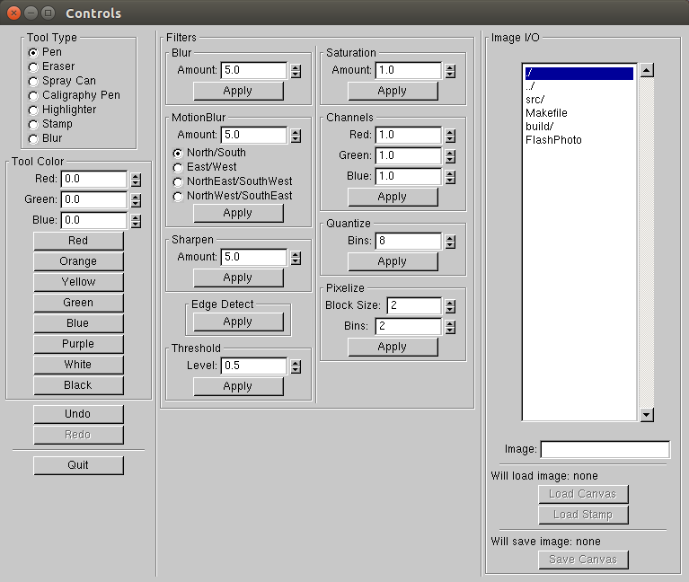
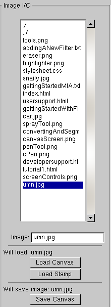

Getting Started with FlashPhoto
Hello, and welcome to FlashPhoto! FlashPhoto is an easy and fun-to-use image manipulation software that falls somewhere between a simple paint program, and a more heavy-duty application like PhotoShop.
This introductory tutorial will guide you through the features of FlashPhoto, and how to use them.
When you open FlashPhoto, you'll see a blank canvas, and a control panel on the right. If you want to jump right in and start working, feel free!
Every feature of FlashPhoto is listed explicitly on the control panel with an informative name, and you can always use the undo/redo buttons on the bottom left of the panel if things
don't work quite like how you expected. If you want more detail however, read on!

Tools: FlashPhoto features a number of simple tools that you can use to draw on the canvas. You can select which one you want to use with the radial button, and then clicking and dragging on the canvas to draw. The "Tool Color" section below the "Tool Type" section allows you to select from a number of standard colors, or "mix" your own by selecting red, green, and blue values between 0 and 1!
Pen, Spray Can, Calligraphy Pen, and Highlighter: These tools look just like what they sound like! Pick a color, draw on the canvas, and watch your drawing come to life!
Eraser: Made a mistake? Use the eraser tool to scrub it off!
Stamp: Load an image into the stamp by selecting it in the Image I/O panel on the right, and then click anywhere on the campus to "stamp" it down!

Blur: This tool smudges the canvas in a small circle around where your mouse cursor is. The effect is somewhat subtle, so intense blurs might require a lot of dragging the mouse around the part you want to blur. If you want to blur the whole canvas, consider the blur filters!
Undo/Redo: Made a mistake? Use the handy undo button to reverse your last action! Decide that that "mistake" wasn't a mistake, after all? Use the redo button to redo it! Take note, though, once you apply a tool or filter to the canvas again, you'll no longer be able to redo any changes you've undone.

Filters: FlashPhoto supports a number of filters that you can apply to the whole canvas.
Blur: Blurs the image. Amount goes from 0-20 -- the higher the amount, the greater the blur!Motion Blur: Blurs the image along the direction you select. Amount goes from 0-100(!) -- the higher the amount, the greater the blur!
Sharpen: Have a blurry image? Sharpen lets you sharpen it! Amount goes from 0-100 -- the higher the amount, the more the image will be sharpened!

Edge Detect: Find the edges of your image!
Threshold: Sets each red, green, and blue component to be 0 or 1, depending on whether it is lower or higher than the threshold value. Theshold goes from 0 to 1.
Saturation: Intensifies the colors. Saturation values above 1 make the colors more intense proporationally. Saturation values between 0 and 1 make the values less intense proportionally, all the way down to greyscale at 0. If the saturation value is negative, it will increase or decrease the intensity of the colors in the same way, but will also invert them.
Channels: Scale red, green, and blue values of the image by the corresponding value.
Quantize: Reduce the possible colors in the image by requiring each red, green, and blue component to be one of X values, where x is the number of bins specified. Fewer bins means fewer color values.
Pixelize: Make any image look like sweet retro art! Pixelize lets you pick a block size and a quantize value, then pixelizes your image according to those values, resulting in sweet retro images!
Image I/O: Want to load in your favorite work of art to improve it? It's easy with FlashPhoto app! The window under Image I/O shows the contents of the current directory you're in, starting initially in the directory FlashPhoto is contained in. You can click a folder in the list to move into it, or click the "../" to move up one level. Double click a .png or .jpg image to select it, then click "Load Canvas" to put it on the canvas, or "Load Stamp" to put it into the stamp tool.

Save Canvas: If you'd like to save your creation, enter the name you'd like to call it, including either the .jpg or .png extension, in the "Image:" text field. Then, click "Save Canvas" to save the image with that name.
That's it! You're now ready to use FlashPhoto to start making art!